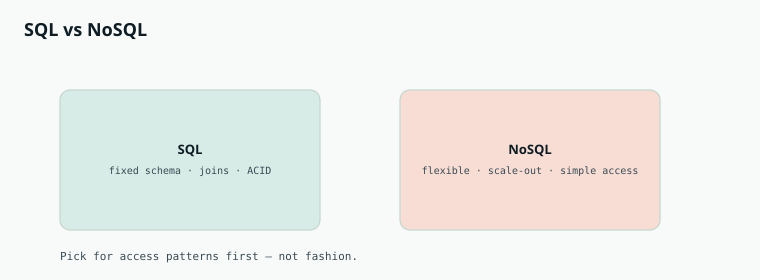

System Design
Chapter 23
SQL vs NoSQL

Picking a database is one of the biggest decisions in a design, and the honest answer is always "it depends on your access patterns." The split people talk about is relational (SQL) versus everything else (NoSQL), so it helps to know what each is genuinely good and bad at.
Relational databases
A relational database stores data in tables with a fixed schema, and it can join tables together to answer complex queries. Its superpower is ACID transactions, which guarantee that a group of changes either all happen or none do, keeping data correct even under concurrency. This is why banking, orders, and inventory almost always sit on a relational store like PostgreSQL or MySQL.
PROS CONS Strong consistency and reliable Harder to scale writes across many transactions machines Flexible, powerful queries with joins A rigid schema slows down rapid change A schema keeps data structured and validated Joins get expensive at very large scale Mature, well understood, everywhere
NoSQL databases
NoSQL is a family, not one thing. Key value stores like Redis and DynamoDB are simple and blazing fast. Document stores like MongoDB hold flexible JSON like records. Wide column stores like Cassandra handle massive write volume across many machines. Graph databases like Neo4j specialize in relationships. What they share is a flexible schema and an easier path to horizontal scale, often by relaxing strict consistency to eventual consistency.
PROS CONS Scales horizontally across many Weaker consistency, often only eventual machines with ease Limited or no joins, so you design around access patterns
Flexible schema fits changing or messy Transactions are limited or absent in data many systems Very high throughput for the right Easy to model data in a way you later access pattern regret Often simpler and cheaper at huge scale
Indexing, the quiet workhorse
An index is a separate sorted structure, usually a B tree, that lets the database find rows without scanning the whole table. It turns a slow full scan into a fast lookup. The trade off is that every index costs extra storage and slows down writes, because each insert or update must also update the index. So you index the columns you filter and sort on, and no more.
C H O O S E B Y A C C E S S P A T T E R N
Ask how the data will be read and written before you pick. Complex queries and strict correctness point to relational. Enormous write volume with simple lookups points to a wide column or key value store. Do not choose based on which name sounds modern, choose based on what your reads and writes actually look like.
Going Deeper
Indexes, and normalize versus denormalize
An index is usually a B tree, a shallow and very wide tree that lets the database descend to any row in a few hops instead of scanning the whole table. That speed is not free: every index costs storage and slows writes, since each insert must update it too, so you index only the columns you filter and sort on. The other big lever is the shape of the data. A relational design normalizes, splitting data into tidy tables that are joined at query time, which avoids duplication but makes reads do work. A document design denormalizes, embedding related data together, so a read is a single fetch but an update may have to touch many copies. You are trading write simplicity for read speed.
Normalizing splits data into tidy tables joined on read. Denormalizing embeds Relational systems aim for ACID: transactions are atomic, consistent, isolated, and durable, so data is always correct even under heavy concurrency. Many distributed NoSQL systems instead offer BASE: basically available, soft state, eventually consistent, trading immediate correctness for availability and scale. Neither is better in the abstract, they match different